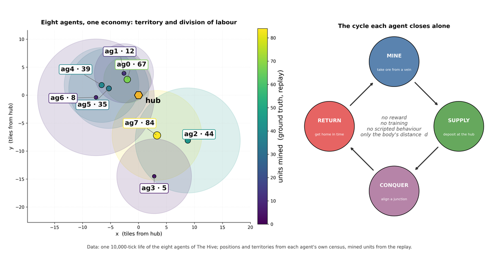

G-EMV: the Pack. Care Without Reward in a World That Pays for Killing
Independent researcher, Barcelona
Two identical agents, with no reward and no training, play forty games in a world where the last one standing wins: they never struck first, defended the sibling one hundred and four times, and gave away what they carried.

Paper three of three. Concept DOI (all versions): 10.5281/zenodo.22713649.